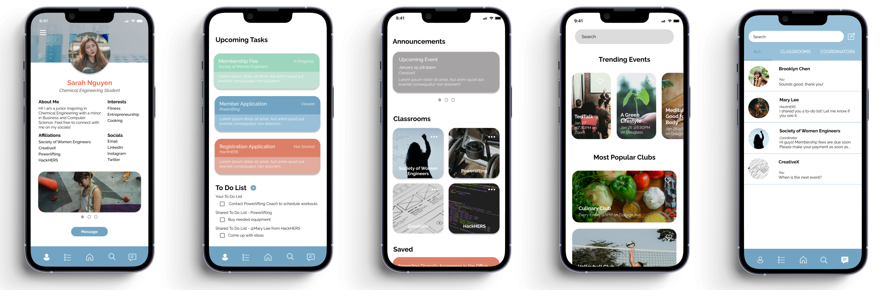

AfterSchool App Proposal
A social networking platform for students to learn of extracurricular activities and manage club responsibilities.
Overview
About the Project
OVERVIEW
This app concept is done in part of completing the 2022 Rielly Douglass BOLD Externship
program with Microsoft.
The prompt is to “create a product to encourage, inspire, and empower students to find new
ways to connect with each other during a global pandemic”.
TIMELINE
January 4 - 13, 2022
TOOLS
Figma & Procreate
CONTRIBUTION
I coordinated this project and my responsibilities included understanding the overall
landscape, ideating solutions, designing the brand identity, conducting user interviews, and prototyping.
The Challenge
Create a product that encourages, inspires, and empowers students to find new ways to connect with each other during a global pandemic.
The Solution
An app that allows students to explore and join opportunities (student organizations and events), communicate to other students and coordinators, and manage their responsibilities (i.e. participation in multiple student organizations and completion of tasks).
Understanding the Problem
Background
In the beginning of each semester, an Involvement Fair is held for students to learn about organizations and activities available on-campus. According to Rutgers University, there are over 800 student organizations offered, ranging from academic to social organizations and so much more. The University holds this exact fair for students to sign-up for emails, join a GroupMe or Discord server, or follow an Instagram page in order to stay informed on key events and details. Students must go from table-to-table to sign-up otherwise, they will miss their chance of participating.
Motivation
Each student organization utilizes their own communication tool to inform members –either
through word-of-mouth, in an email, on a flyer or an affiliated website, or some
communication platform like Discord or GroupMe that may require an access code or link.
Some universities have a dedicated page for each organization but is oftentimes out-of-date
and does not provide valuable information, such as meeting times, locations, designated
organization emails, and links to a group communication platform. Thus, this process makes
it difficult for incoming and interested students to participate and be informed.
With the transition from in-person to virtual meetings, it is even more difficult for
students to join extracurriculars because of the lack of communication, organization,
and promotion of available opportunities. The Involvement Fair enables organizations to
promote themselves and students be informed of the opportunities, but because it is hard
to coordinate such a large event online, students are taking the burden and are unable to
learn of such opportunities. Thus, are not participating at all.
On the other hand, for students that are already participating in extracurriculars,
information and materials regarding organizations are often distributed to members using
Google Classroom, Slack, or some other project management system, and could vary from one
organization to another. Remote meetings are also held using video conference platforms
like Zoom and WebEx for group communication.
This method of distributing information and communicating to groups is inefficient for
both students and organization coordinators because important information can be missed
and managing different organizations becomes difficult when multiple platforms are used
for communication.
Is there a product that encompasses all the necessary features for student organizations to operate seamlessly?
User Research
Research
Survey Insight
Participants
I chose ten rising and current college students and recent graduates and instructed them to fill out a Google Survey.
I tried to understand their relationship with extracurriculars and discover their pain points,
needs, and requirements for a social networking app.
Interview Script
What is the biggest struggle that you have experienced with the transition from in-person to remote-learning?
How did you learn about student activities (such as clubs, campus events, etc.)?
How do you feel about your ability to communicate to club coordinators and members? (Is it easy to reach out to
the E-board and meet other members?)
What would you do differently to improve communication between club coordinators and students?
Pain Points
- Poor communication from club coordinators and the communication becomes worse with larger student organizations
- Lack of consistent promotion and proper marketing of clubs and events to students
- Lack of organization from club to club, risking the chance of missing important information
Survey Findings
- 100% use some form of social media for communication from clubs (i.e. GroupMe, Facebook, Instagram, etc.)
- 50% strictly use email for communication from clubs
- 90% learn of clubs and events through their friends
- 55% learn of clubs and events from email and social media strictly
- Summary: Communication is poor and complicated among extracurriculars. * of the surveyed individuals
User Personas
JASMINE, 18
Jasmine is a 18 year old Rutgers University freshman who has just started college.
Jasmine is on a pre-med track and she is looking to meet new people but is having a hard
time with being virtual. She is also looking to join clubs but the transition hasn’t been easy.
ERIC, 21
Eric is a senior who is graduating this year from Rutgers University with his bachlors in
Computer Science. He is one of the club cooridinators but wants to find an easier way to
coordinate meeting times and sending information out to his team seamlessly.
JESSICA, 20
Jessica is a 20 year old student at Rutgers University who started college when covid hit.
Her freshman year was difficult because it was mostly virtual and she wasn’t able to make
new friends. Now, Jessica would like to meet new people but is unsure of where to find
information about clubs.
The Solution
Ideation
Brand Image
Typography
Colors
Logo
Wireframing
Based on the main features and task flow of the platform, initial sketches and wireframes of the prototype were made.
Sketching
Designing Initial Interface

Low Fidelity Design
Greeting Page
Create Account
User Profile
Tasks Page
Explore Page
Messages Page
High Fidelity Design
User Profile
- Existing communication methods do not offer users the ability to express their personal interests or share contact information
- This enables users (Students and Club / Event Coordinators) to write a short biography, showcase their hobbies and social links, and favorite images of themselves
- This design also provides the opportunity to have impactful introductions and directly communicate to one another seamlessly
Overview of User Profile
Tasks
- Just like important information, tasks assigned by Club Coordinators become lost in threads of communication when messages are spammed in groupchats
- This enables Club Coordinators to share tasks in an organized manner (not in text form) and Students are able to manage their responsibilities accordingly
- Members of student organizations are also able to share tasks that they may be working on together for better project and time management (this is crucial for students!)
Overview of Student's Tasks
Create a Shared Task
Overview of Coordinator's Tasks
Dashboard
- Students relied solely on their management skills to ensure that they are on-top of their responsibilities as a member of their organization(s), checking in spammed groupchats and emails constantly
- This provides students with an accesible information hub of all the organizations and events they are enrolled in
- The "Saved" function allows users to pin interested opportunities to the Dashboard

Overview of Dashboard
Overview of Dashboard cont.
Society of Women Engineers Classroom Overview
Explore
- Methods of promotion and advertisement of student opportunities rely on multiple communication platforms (via email, social media, or word-of-mouth). Students found this to be inconsistent and unreliable.
- This provides students with a resource to search keywords of their interests, find opportunities, and register for them
- The ability to save interested opportunities is a useful tool for students as it stores a compiled list and can be referenced at another time
Overview of Explore Page
Culinary Club Classroom Overview
Event Registration
Messages
- Students found it to be difficult to reach coordinators outside of meetings because their contact information is not adequately displayed -- and may be a deterrent for new participants
- This offers members an outlet to directly reach out to coordinators and their fellow members, engage in club groupchats, and create chats with friends
Overview of Messages
Direct Message Conversation
Create a Message
View Final Product

Conclusion
Reflection
User Research: Conduct more user interviews to understand pain points and the scale of this app concept for college students.
Usability Testing: Create more prototypes to conduct further user research to find room for improvements.
Research Potential: Find out if there is an existing platform that encompasses all the necessary features to promote student opportunities, connect students and coordinators, and provides direct communication. If there is not, pitch idea to University!
Next Steps
- Find bugs in existing hi-fi wireframes and continue to conduct user testing to refine prototype.
- Start app development.